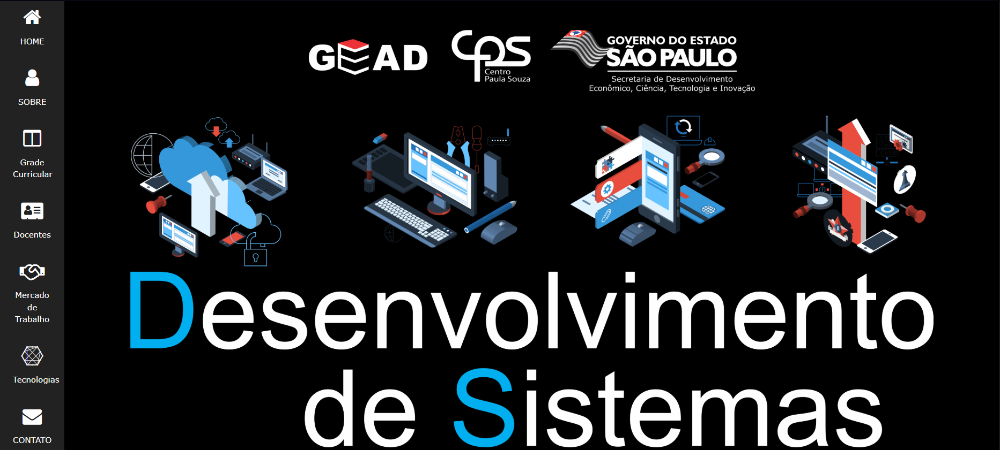
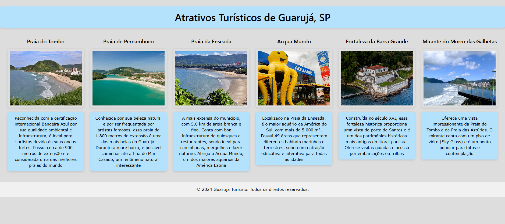

Meus projetos

Portal do Curso Técnico em Desenvolvimento de Sistemas - CPS
Site institucional desenvolvido para apresentar o curso Técnico em Desenvolvimento de Sistemas do Centro Paula Souza (CPS). O portal reúne informações sobre a grade curricular, mercado de trabalho, tecnologias abordadas, docentes e formas de contato, proporcionando uma visão completa para futuros alunos e interessados.
- Layout responsivo com W3.CSS
- Seções para apresentação do curso, docentes, mercado e tecnologias
- Design moderno e navegação intuitiva
- Formulário de contato integrado
- Utilização de ícones Font Awesome
- Conteúdo organizado e fácil de atualizar

Atrativos Turísticos de Guarujá, SP
Projeto de site informativo sobre os principais atrativos turísticos do Guarujá, SP. O objetivo é apresentar as praias, pontos históricos e atrações naturais da cidade, com imagens, descrições e layout responsivo, facilitando o acesso de turistas e moradores.
- Layout responsivo com W3.CSS
- Apresentação de praias, mirantes e pontos históricos
- Imagens ilustrativas e descrições detalhadas
- Design limpo e moderno
- Estrutura fácil de navegar
- Rodapé com direitos autorais
© Copyright 2024. Produzido por Lucas Matias.
愛